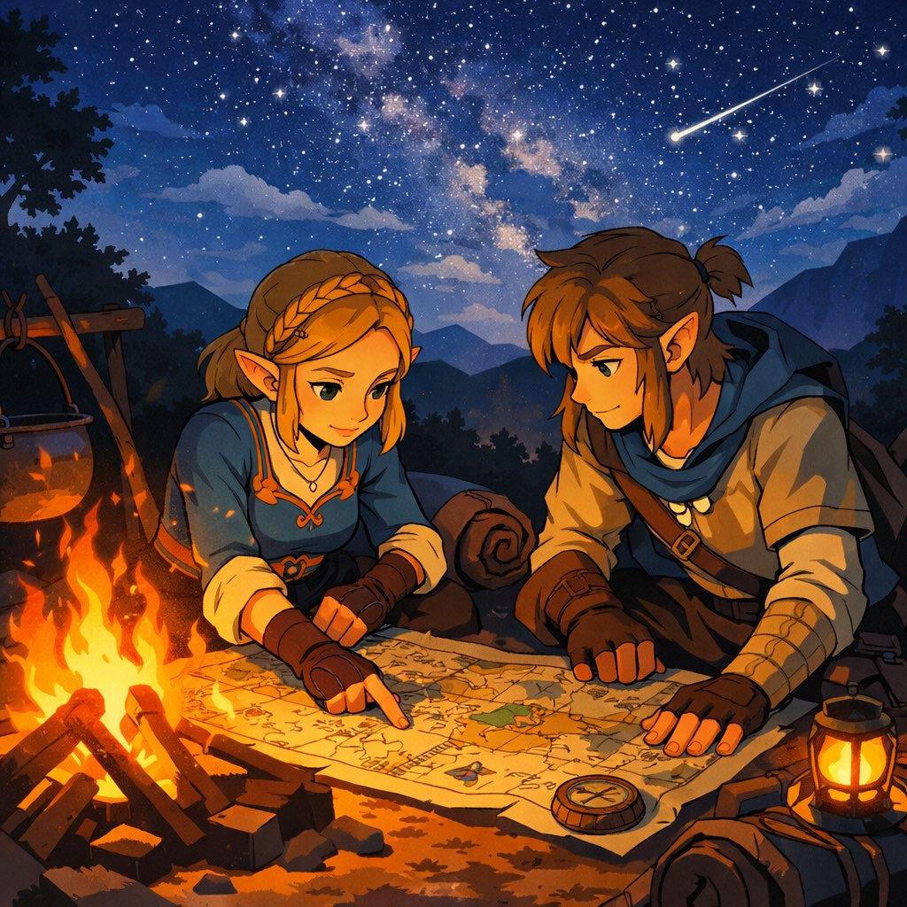
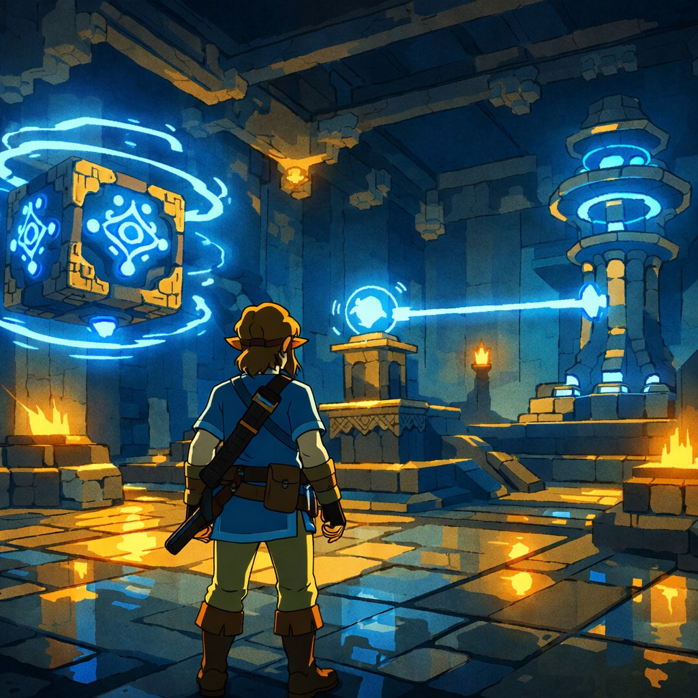
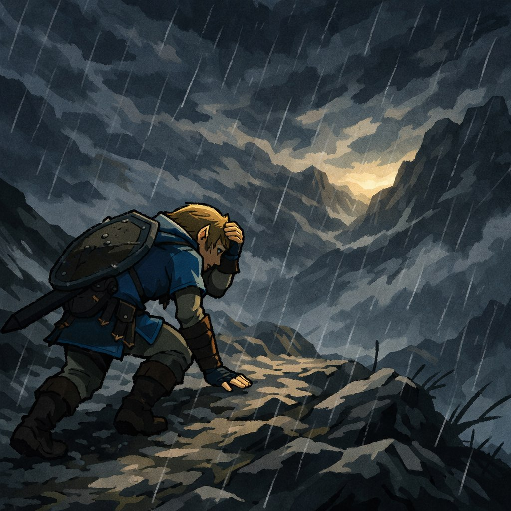
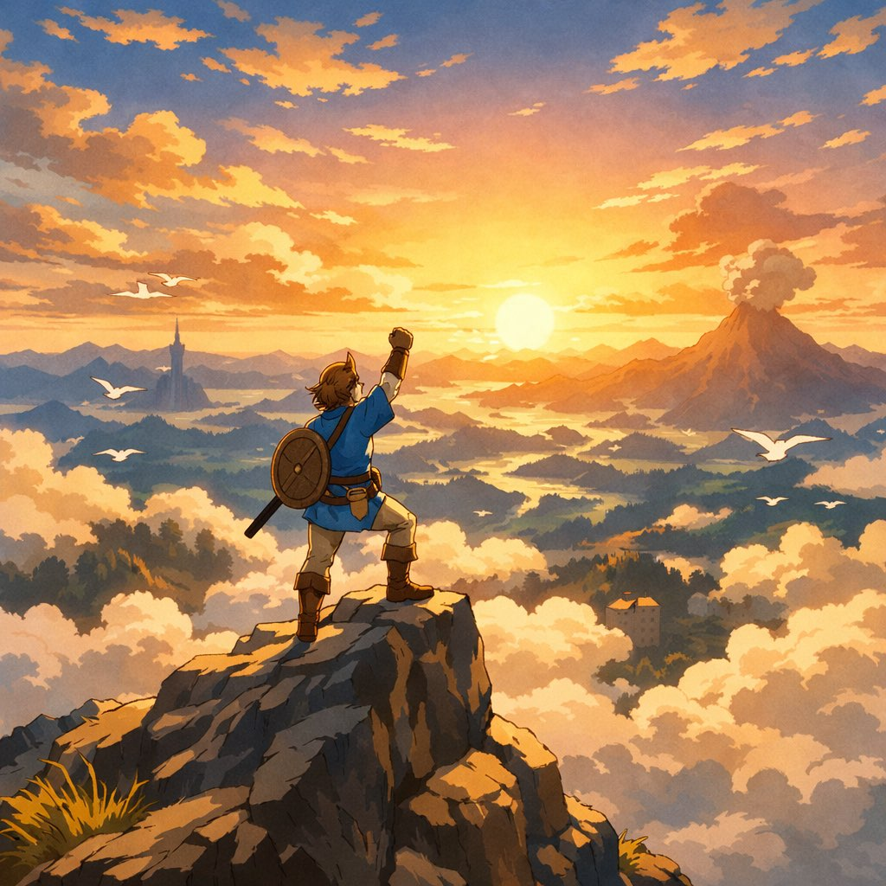

你站在工商局门口，手里攥着一叠材料。
排了三个小时的队，被退回来两次——第一次名字重复了，第二次经营范围写错了格式。
终于拿到营业执照的那一刻，你拍了张照发了朋友圈。
点赞的有23个人。其中8个是亲戚，问你「公司招人吗」。
你在神庙入口的石碑上刻下第一行字：
「公司注册资金10万——其中9万是借的。」
✦ 神庙完成 · 获得道具「营业执照」
· · · · ·

你一个人写了三个月的代码。
白天跑客户，晚上写代码，凌晨改bug。吃饭靠外卖，睡觉靠沙发。
直到某天你在技术论坛发了个帖子，标题是「有人想一起做个改变小工厂的AI吗」。
8个人回复。7个人聊了之后说「等你融到钱再说」。
第8个人叫赵磊。他说：「我不等。我明天就能来。工资你看着给。」
后来你才知道，他当时手里有两个大厂的offer，总包120万。
他选了你的沙发和泡面。
赵磊后来说起这件事，总是轻描淡写：
「因为那些大厂的活儿，别人也能干。但你这个事儿——你不干就没人干了。」
✦ 神庙完成 · 获得同伴「赵磊」
· · · · ·

第一个客户是一个做五金配件的小厂老板，姓周。
你跟他聊了四个小时。他问了你17个问题，你有5个答不上来。
他说：「你这东西，我看不太懂。」
你说：「周总，我免费给你用三个月。不好用您骂我就行。」
三个月后他打电话来：
「小伙子，你这东西帮我一个月省了2万3。你报个价吧。」
你在电话里报了一个很低的价格。
他说：「太低了，对得起你自己吗？」
这是创业以来，第一次有人嫌你报价太低。
✦ 神庙完成 · 获得宝物「第一份合同」
· · · · ·

第11个月的时候，账上只剩4万7。
够发一个月工资。发完就没了。
你在凌晨两点算了一遍账——如果下个月没有新客户签约，公司就关门。
赵磊看到你在发呆，走过来说：「我这个月工资不要了。」
你说：「你疯了。」
他说：「你先把服务器续上。工资的事以后再说。」
后来你才知道——
那个月，他偷偷把信用卡额度套出来了。
有些人把钱借给你是因为相信你会还。
有些人把钱给你是因为相信你在做对的事。
✦ 神庙完成 · 获得「坚持の勋章」
· · · · ·

第14个月。新版本终于上线了。
上线那天你没有发朋友圈。
你做了一件事——给周总打了个电话：「周总，新版本上线了，我帮您升级。」
周总说：「好。对了，我给你介绍了三个朋友，他们也想用。」
你挂了电话，看了一眼后台——
用户数：1000。
你没有庆祝。你给赵磊转了上个月的工资，附言：「连本带利。」
赵磊回：「利息呢？」
你回：「利息是——下一座神庙，我们一起去。」
✦ 所有神庙完成 · 解锁「旷野的勇者」
站在旷野最高的山顶，
你看见了日出。
不是因为你跑得快，
是因为你一直在走。
—— 旷野创业冒险 · 完 ——
「每座神庙都有自己的谜题，但只有走进去的人才能解开。」